Chuyển đổi số nông nghiệp
Số hóa vùng trồng, nhật ký canh tác và truy xuất nguồn gốc trên nền tảng FarmBase, đồng bộ với hệ thống của Bộ NN&MT.
Hiệp hội nghề nghiệp · Buôn Ma Thuột, Đắk Lắk
Kết nối & Nâng tầm Sầu riêng Đắk Lắk. Nơi cập nhật chính sách, thị trường, sự kiện ngành sầu riêng tại Đắk Lắk và cả nước.
Về chúng tôi
Hiệp hội Sầu riêng tỉnh Đắk Lắk ra mắt ngày 10/3/2023 tại TP. Buôn Ma Thuột. Đại hội đã bầu Ban Chấp hành khóa I (nhiệm kỳ 2023 – 2028) gồm 19 thành viên.
Hiệp hội tập hợp doanh nghiệp, hợp tác xã và nhà vườn, với định hướng phát triển hội viên, tiếp nhận và chuyển giao tiến bộ kỹ thuật trong sản xuất, chế biến, thương mại; tổ chức hội thảo, tập huấn kỹ thuật, tham quan học tập trong và ngoài nước; nâng cao tổ chức sản xuất và chất lượng sản phẩm.
“Đắk Lắk – mắt xích vàng trong chuỗi cung ứng sầu riêng toàn cầu. Đất đỏ bazan, khí hậu phù hợp cùng kinh nghiệm canh tác…”
Trích bài đăng fanpage Hiệp hội, 26/8/2026
Lĩnh vực đồng hành
Số hóa vùng trồng, nhật ký canh tác và truy xuất nguồn gốc trên nền tảng FarmBase, đồng bộ với hệ thống của Bộ NN&MT.
Hỗ trợ hồ sơ, duy trì mã số vùng trồng và kiểm soát chất lượng, đáp ứng yêu cầu của thị trường nhập khẩu.
Kết nối doanh nghiệp, cơ sở đóng gói và đối tác vận chuyển, đưa sầu riêng Đắk Lắk vươn xa tới thị trường quốc tế.
Chuyển đổi số · Truy xuất nguồn gốc
Hiệp hội đồng hành cùng nền tảng FarmBase triển khai truy xuất nguồn gốc, hỗ trợ bà con chuẩn bị hồ sơ mã số vùng trồng và đồng bộ dữ liệu với hệ thống truy xuất nguồn gốc nông sản của Bộ Nông nghiệp và Môi trường.
Dữ liệu FarmBase tại Đắk Lắk, ngày 28/10/2026. “Vùng đang quản lý” gồm cả vùng đã có mã và vùng đang chuẩn bị hồ sơ.
Ghi nhật ký ngay trên Zalo Mini App, chụp ảnh bao bì phân thuốc.
Quản lý vùng, lô, nhật ký, thu hoạch trên trang quản lý FarmBase.
Đồng bộ dữ liệu với hệ thống truy xuất nguồn gốc nông sản quốc gia.
Quét QR vùng trồng, QR từng lô để xem hành trình của trái sầu riêng.
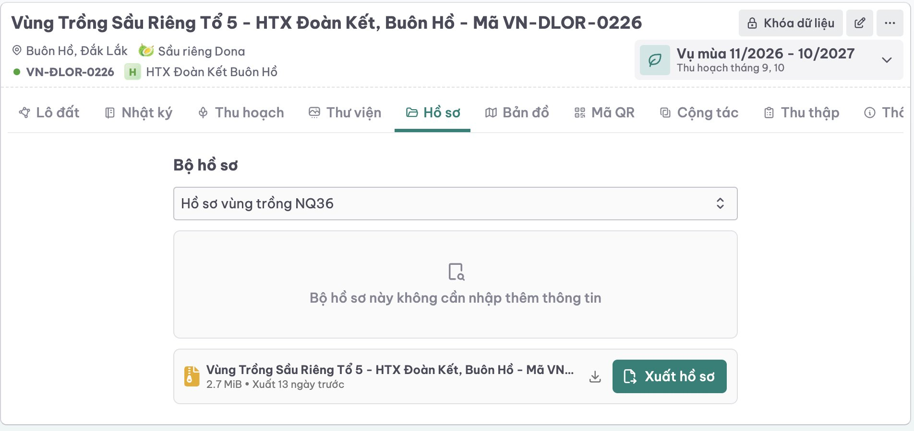
Mở ngay trong Zalo, không cần cài thêm ứng dụng. Con cháu có thể được ủy quyền ghi giúp.
Chọn phân thuốc từ danh mục có hoạt chất, liều lượng, thời gian cách ly. Theo dõi trạng thái “cần đồng bộ / đã đồng bộ”.
Hình lô, tọa độ, diện tích, số cây, sản lượng. Xuất hồ sơ vùng trồng trực tiếp từ hệ thống.
HTX nhập cả trăm nhật ký, thu hoạch bằng một file Excel mẫu, hệ thống báo dòng lỗi.
Kết nối hệ thống truy xuất nguồn gốc của Bộ NN&MT từ 01/07/2026; việc đồng bộ áp dụng cho các vùng trồng đã có mã. Kết nối GS1 Việt Nam theo lộ trình, dự kiến 11/2026. Giải pháp FarmBase do BVI và Salefronts đồng phát triển.
Hỗ trợ bà con làm mã số vùng trồng
Đội ngũ hiện trường cùng HTX đi từng vườn, số hóa từng lô, chuẩn hóa điều kiện tại vườn và đồng hành đến khi vùng trồng được phê duyệt, rồi tiếp tục duy trì dữ liệu cả vụ.
Việc cấp mã số vùng trồng thuộc thẩm quyền cơ quan quản lý nhà nước. Hiệp hội và FarmBase hỗ trợ kỹ thuật, hồ sơ và vận hành hệ thống truy xuất. Làm mã vùng trồng không ảnh hưởng quyền sử dụng đất; chủ vườn vẫn tự chủ việc mua bán.
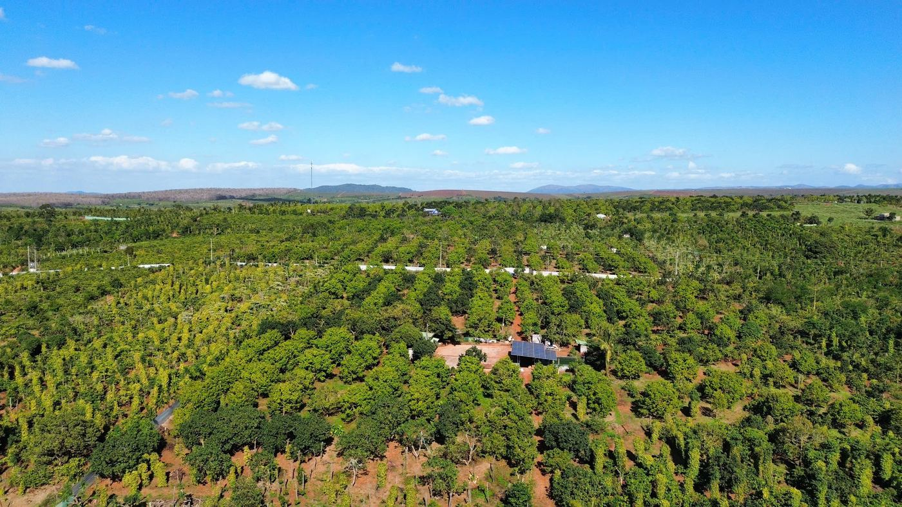
Chốt danh sách hộ, đơn vị đứng mã (HTX hoặc tổ hợp tác). Khảo sát diện tích, số cây, tuổi cây, sản lượng, bay flycam.
Tọa độ, hình lô, số tờ, số thửa cho từng lô. Hệ thống là nguồn dữ liệu duy nhất, giấy tờ được bảo mật.
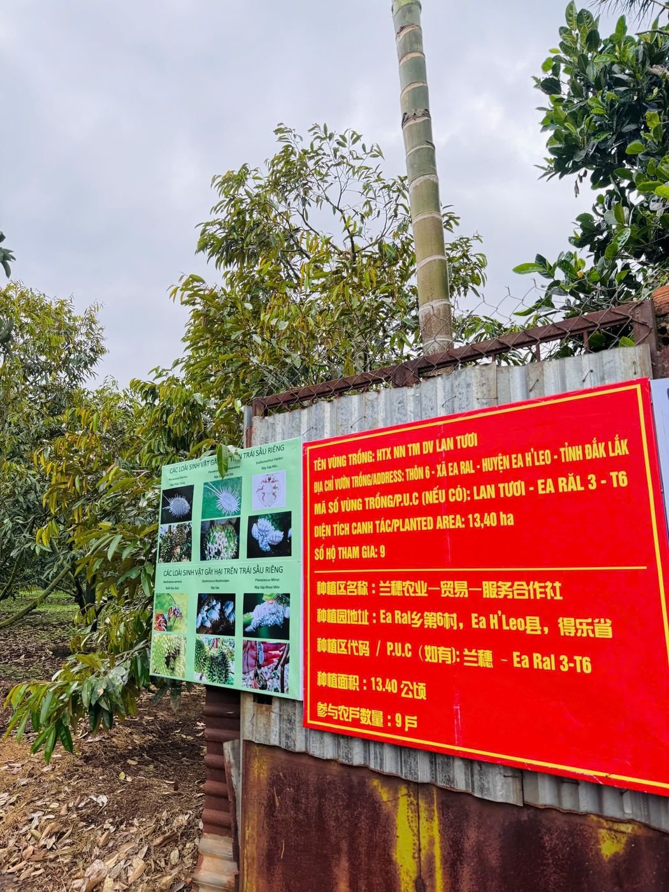
Biển song ngữ Việt – Trung, kho thuốc có khóa, bẫy giám sát sinh vật gây hại có số hiệu, điểm tập kết trái không chạm đất.
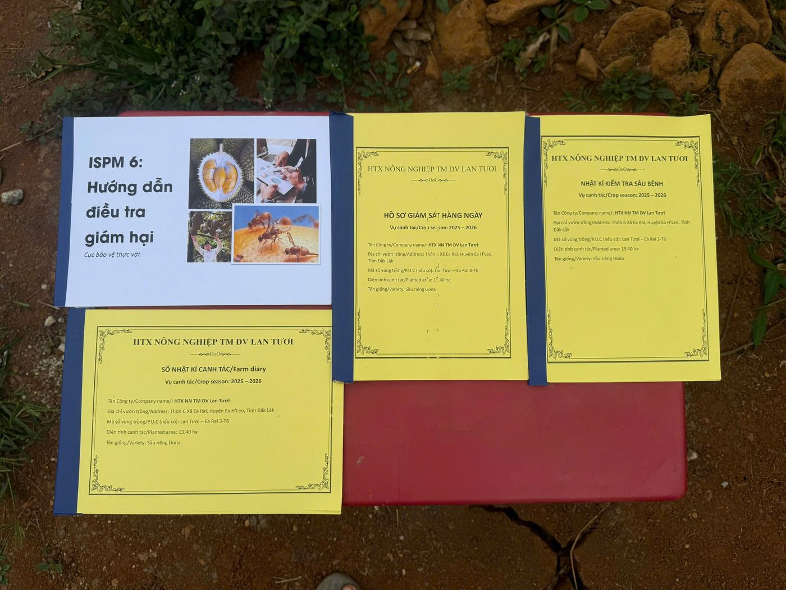
Tập huấn VietGAP, ISPM 6, ghi nhật ký, thời gian cách ly. Mỗi hộ có đủ bộ nhật ký, ghi liên tục cả vụ.
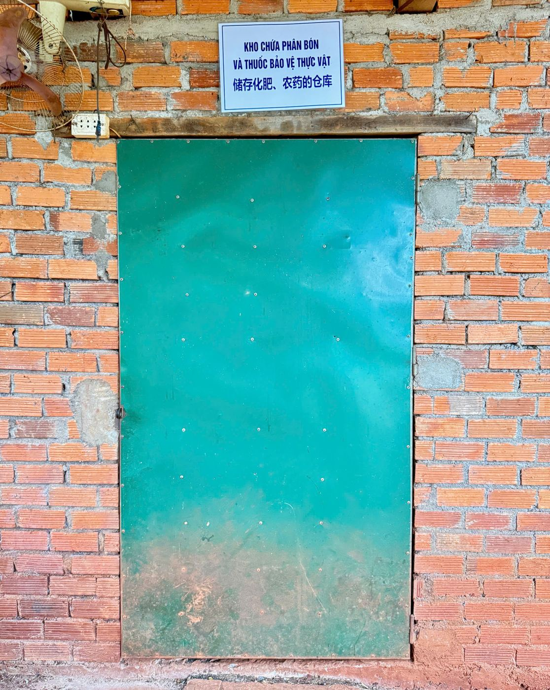
Hồ sơ nộp UBND xã qua Cổng Dịch vụ công quốc gia. Xã kiểm tra thực địa, tỉnh và Bộ NN&MT gửi phía nước nhập khẩu xem xét.
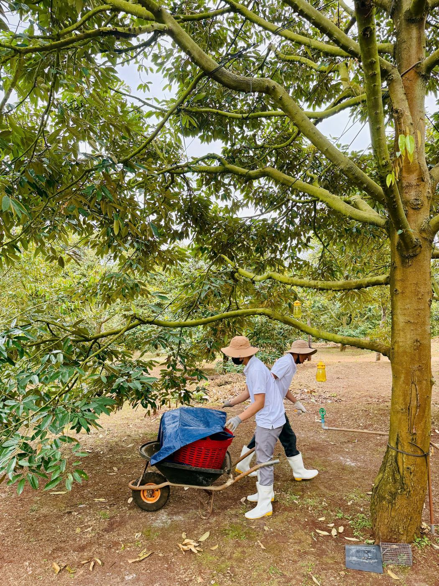
Nhật ký liên tục, giám sát bẫy định kỳ, ghi thu hoạch theo lô và đợt. Dữ liệu đồng bộ, QR truy xuất cho người mua.
Sầu riêng Đắk Lắk qua những con số
Diện tích sầu riêng toàn tỉnh (khoảng)
Sản lượng dự kiến niên vụ 2026 (gần)
Mã số vùng trồng, khoảng 7.500 ha
Cơ sở đóng gói được phê duyệt xuất khẩu
Sầu riêng Đắk Lắk đóng góp vào kim ngạch xuất khẩu năm 2025 (khoảng)
Nguồn: phát biểu của Chủ tịch UBND tỉnh Đỗ Hữu Huy tại lễ khai mạc Lễ hội Sầu riêng Đắk Lắk, 15/8/2026, theo Tạp chí Công Thương.
Kỷ lục Guinness thế giới · 16.8.2026
“Đoàn xe bán tải chở sầu riêng dài nhất thế giới”, Largest parade of fruit-carrying vehicles. Đoàn xe xuất phát từ Quảng trường Tân An, qua Trần Phú, Lê Duẩn, Quốc lộ 26 và về đích trên đường Võ Nguyên Giáp.
Cuộn để xem hành trình →
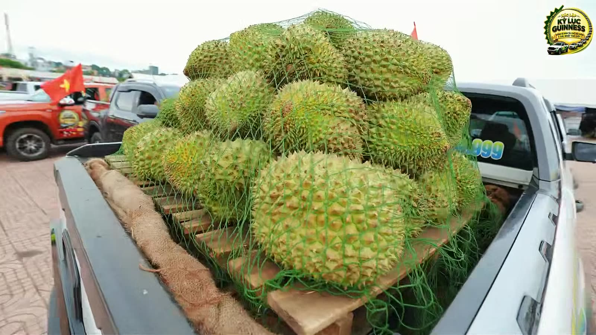
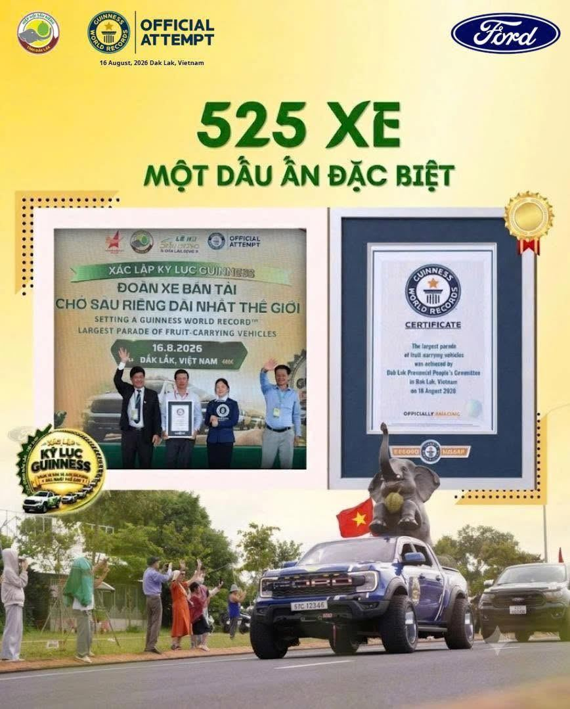
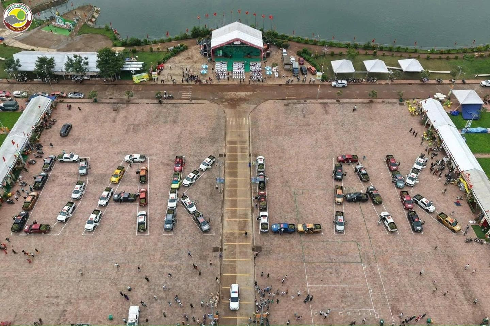
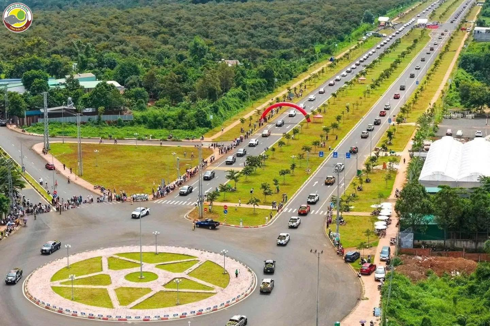
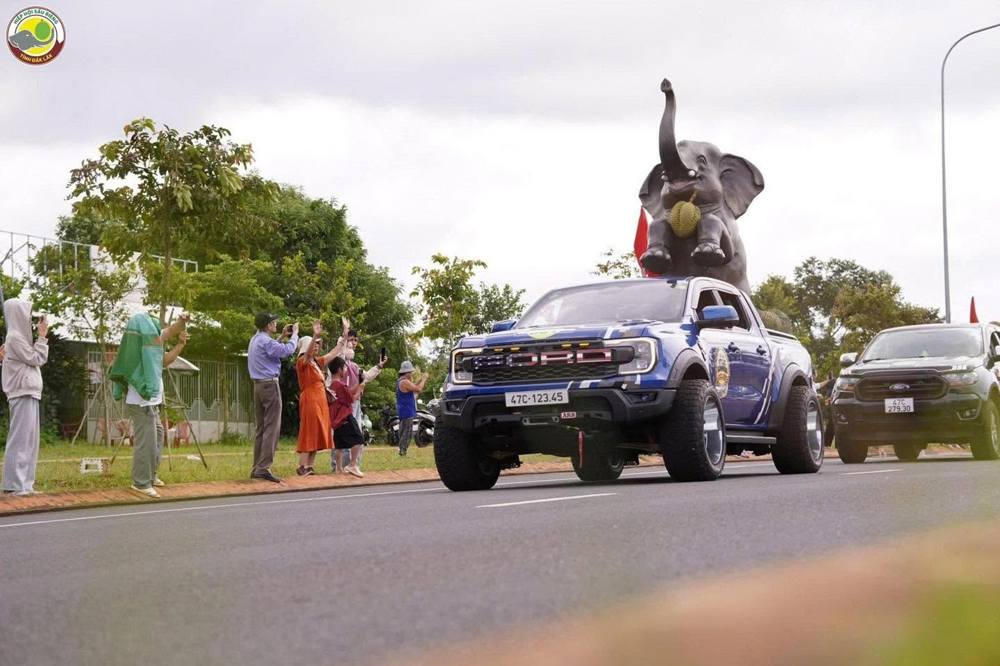
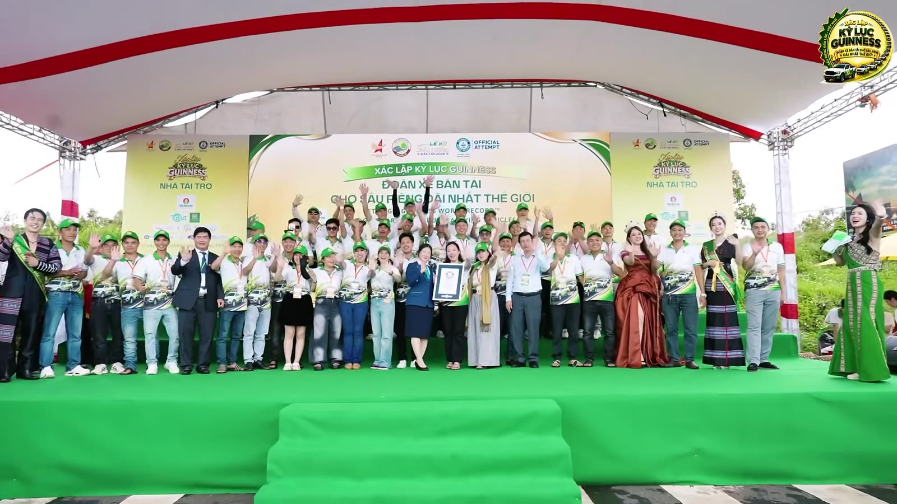
Recap video
Một kỷ lục Guinness được xác lập không chỉ bằng những con số ấn tượng, mà còn được tạo nên từ tinh thần đoàn kết của nhà vườn, doanh nghiệp, lực lượng chức năng và hàng trăm tình nguyện viên.
Video từ fanpage Hiệp hội Sầu riêng Đắk Lắk.
15/8 – 2/9/2026
Chủ đề “Sầu riêng Đắk Lắk – Kết nối, vươn xa”. Lần đầu tiên tỉnh Đắk Lắk tổ chức Lễ hội Sầu riêng quy mô cấp tỉnh, diễn ra tại phường Buôn Ma Thuột, xã Krông Pắc, phường Tuy Hòa và các vùng trồng sầu riêng.
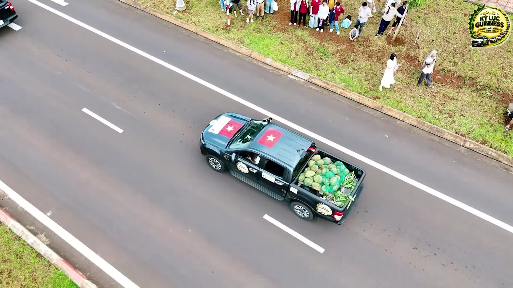
1 kỷ lục Guinness thế giới và 2 kỷ lục Việt Nam
Trong đó khoảng 16.000 lượt khách quốc tế
Kỷ lục Việt Nam: chế biến và công diễn nhiều món ăn từ sầu riêng nhất
Doanh thu du lịch trong thời gian lễ hội (trên)
Kỷ lục Việt Nam: mô hình “Chiếc gùi sầu riêng lớn nhất Việt Nam”
Tổng giá trị gần 9.000 tỷ đồng
Phiên đấu giá sầu riêng tại vườn đầu tiên ở xã Krông Pắc: 14,36 ha VietGAP, giá trúng 68.000 đ/kg
Tiêu thụ trong thời gian lễ hội, khoảng 44 tỷ đồng
Nguồn: Tạp chí Công Thương, 3/9/2026; Báo Đại biểu Nhân dân, 26/7/2026.
Hành trình
Lễ ra mắt Hiệp hội Sầu riêng tỉnh Đắk Lắk tại TP. Buôn Ma Thuột với khoảng 160 đại biểu là doanh nghiệp, hợp tác xã và nhà vườn; bầu Ban Chấp hành khóa I gồm 19 thành viên.
Nền tảng FarmBase (trước đây là DurianBase) mà Hiệp hội đồng hành kết nối hệ thống truy xuất nguồn gốc nông sản của Bộ Nông nghiệp và Môi trường, đồng bộ dữ liệu cho các vùng trồng đã có mã.
Phiên đấu giá tại vườn đầu tiên ở xã Krông Pắc: 10 vườn Dona, 14,36 ha đạt VietGAP, tổng giá trị khoảng 23,8 tỷ đồng. Hiệp hội có mặt cùng lãnh đạo tỉnh và các sở ngành.
Đêm khai mạc tại Quảng trường 10/3, phường Buôn Ma Thuột. Cùng đêm công bố kỷ lục “Chiếc gùi sầu riêng lớn nhất Việt Nam”.
525 xe bán tải chở sầu riêng xác lập kỷ lục “Đoàn xe bán tải chở sầu riêng dài nhất thế giới”. Hiệp hội gửi thư tri ân lực lượng CSGT và các đơn vị tình nguyện.
Chương trình gặp gỡ, giao thương, kết nối hợp tác chuỗi cung ứng sầu riêng Việt Nam – Trung Quốc, tỉnh Đắk Lắk 2026 tại Elephants Hotel, Buôn Ma Thuột. Định hướng chuyển từ bán quả sang xây dựng chuỗi giá trị.
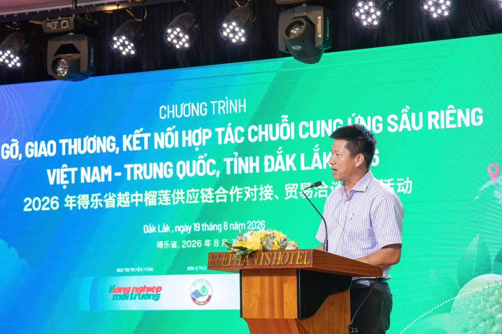
Tọa đàm “Gỡ điểm nghẽn ngành hàng sầu riêng – Kiến tạo xuất khẩu bền vững” do Báo Tiền Phong tổ chức tại Đắk Lắk, với sự tham gia của cơ quan hải quan, kiểm dịch và Hiệp hội.
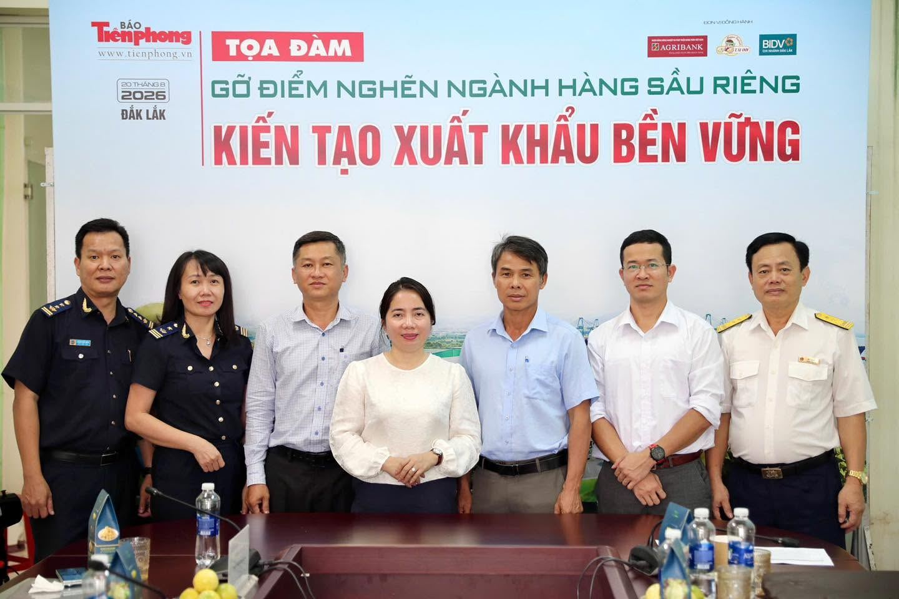
Trao giấy chứng nhận cho học sinh Trường Cao đẳng Buôn Ma Thuột hoàn thành xuất sắc kỳ thực tập tại chương trình “Đoàn xe bán tải chở sầu riêng dài nhất thế giới”.
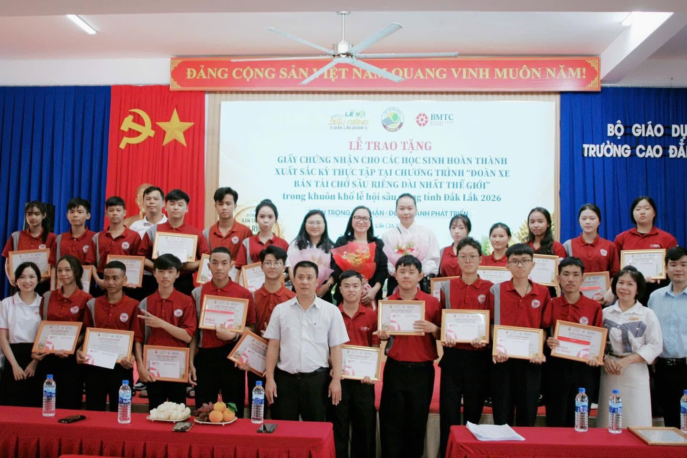
Lễ hội khép lại với 3 kỷ lục, khoảng 750.000 lượt khách và 9 biên bản hợp tác. Ngày 4/9, Ban Tổ chức gửi lời cảm ơn tới các nhà tài trợ, đơn vị đồng hành.
Tập huấn kỹ thuật
Những lớp tập huấn tại hội trường và ngay tại vườn giúp bà con nắm quy trình canh tác an toàn, ghi nhật ký điện tử và đáp ứng yêu cầu của thị trường nhập khẩu.
Đào tạo giảng viên nguồn, 95 học viên
Tập huấn nông dân, khoảng 3.000 lượt người
3 lớp Hiệp hội phối hợp GIZ cho nông dân, cán bộ HTX, doanh nghiệp (07/2025)
Nông hộ vùng trồng 07, HTX NN Xanh Krông Pắc, tự cài ứng dụng và ghi nhật ký
Đào tạo đội ngũ nòng cốt hướng dẫn bà con ghi nhật ký canh tác, truy xuất nguồn gốc trên FarmBase, trong khuôn khổ dự án hợp tác với GIZ.
Phổ biến yêu cầu truy xuất, nhật ký điện tử và cách duy trì mã vùng trồng cho nông dân, HTX trên địa bàn.
Chuyên gia hướng dẫn kỹ thuật nâng chất lượng trái. Hiệp hội bàn giao tài khoản truy xuất nguồn gốc cho UBND xã Krông Pắc.
VietGAP · ghi nhật ký · nguyên tắc 4 đúng · thời gian cách ly · ISPM 6, điều tra 5 điểm chéo góc · sinh vật gây hại phía nhập khẩu quan tâm · duy trì mã.
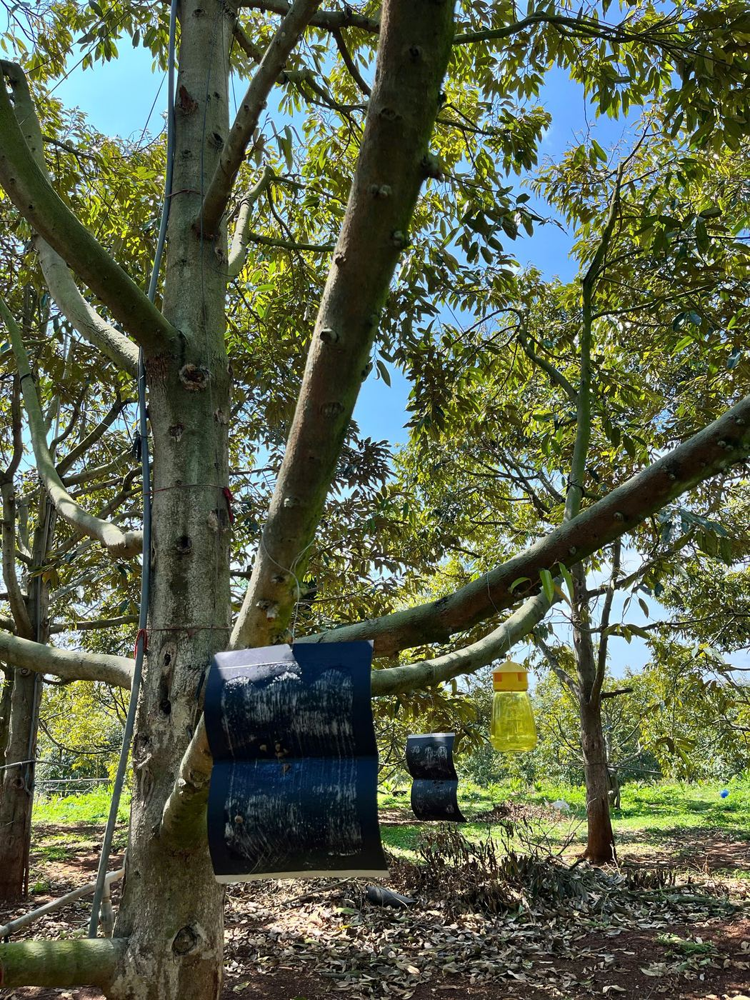
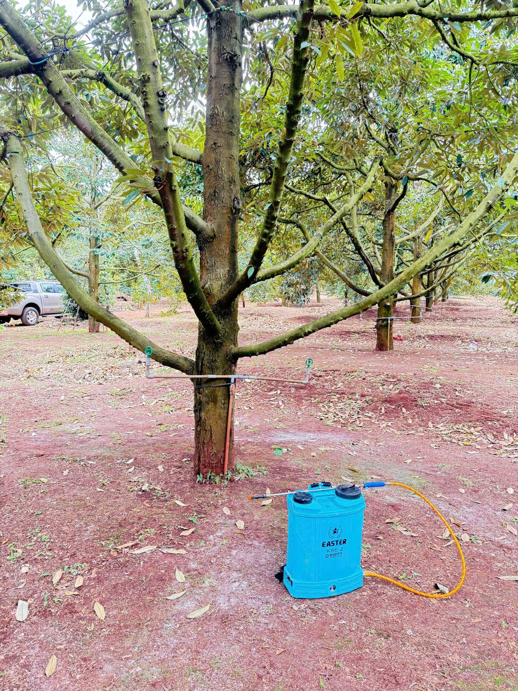
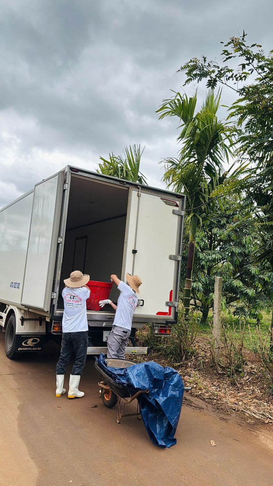
Khoảnh khắc
Tri ân
Hiệp hội gửi thư cảm ơn tới lực lượng Cảnh sát giao thông Công an tỉnh Đắk Lắk, tình nguyện viên các trường cùng các nhà tài trợ, đồng tài trợ đã góp phần làm nên thành công của Lễ hội.
Báo chí nói về chúng tôi
Liên hệ
Nhà vườn, hợp tác xã, doanh nghiệp và đối tác quan tâm tới ngành sầu riêng Đắk Lắk, hãy liên hệ với Hiệp hội.